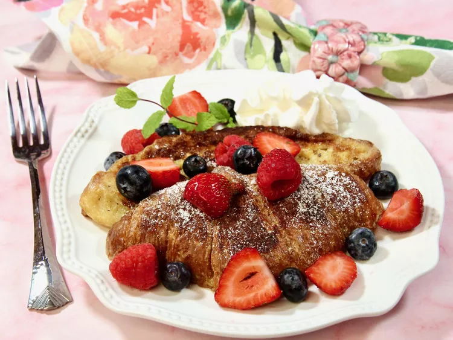

Croissant French Toast

Description
This croissant French toast makes an easy and impressive breakfast or
brunch. It's the perfect choice for special occasions or holidays. Serve
warm with berries, maple syrup, or your favorite toppings.
Ingredients
- 4 large croissants, halved horizontally, left out overnight
- 3 large eggs
- ½ cup half-and-half
- 1 tablespoon white sugar
- 2 teaspoons vanilla extract
- ½ teaspoon ground cinnamon
- ¼ teaspoon salt
- 1 pinch ground nutmeg
- 2 tablespoons unsalted butter